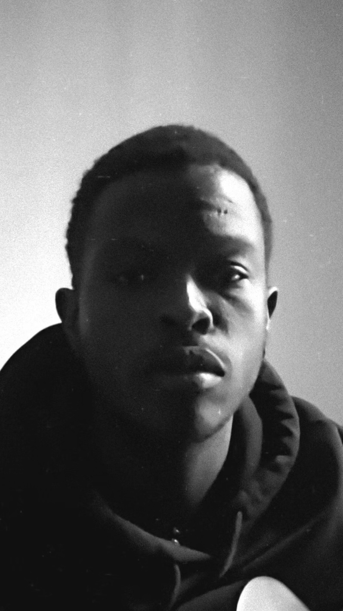

dumela, i'm anson.
i am delighted to find you here.
i am an artist and i have curated this space (realm) to share my artistic inklings with you.
artist • curator

a keen observer of the world, with a deep love for hyperrealism, surrealism, minimalism, and messy creative expression.
having decided to step away from traditional platforms due to a desire for intentionality, i wanted to build a space where one could simply sit, look, and breathe.
please check back as i arrange the room and hang the pieces on the walls. the gallery is currently being curated.